If you have any questions that are beyond the scope of this help file, please email our support support@univertheme.com.
or open a free support ticket on our Support Portal.
has a base page structure containg of header, mega menu,
top bar, components and footer as shown below:
The Page head contains of metadata, theme css files:
<!doctype html>
<html lang="en">
<head>
<meta name="viewport" content="width=device-width, user-scalable=no, initial-scale=1.0, maximum-scale=1.0, minimum-scale=1.0" />
<meta charset="UTF-8" />
<title>{TITLE}</title>
<link href="./plugin/fonts/transfonter/fonts.css" rel="stylesheet">
<link href="./plugin/fonts/font-awesome/css/font-awesome.min.css" rel="stylesheet" />
<link href="./plugin/fonts/platicon/font/flaticon.css" rel="stylesheet">
<link href="./plugin/fonts/themify/themify-icons.css" rel="stylesheet" />
<link href="./plugin/bootstrap/css/bootstrap.min.css" rel="stylesheet" />
<link href="./plugin/animsition/css/animsition.min.css" rel="stylesheet" />
<link href="./plugin/lightbox/css/lightbox.min.css" rel="stylesheet" />
<link href="./css/animate.css" rel="stylesheet" />
<link href="./plugin/slick/slick.css" rel="stylesheet" />
<link href="./css/style.css" rel="stylesheet" />
<link href="./css/customize.css" rel="stylesheet" />
</head>
Base plugins are required by global reusable components(portfolio, carousels, fancybox, etc).
<!-- BEGIN: SCRIPT -->
<script src="./plugin/jquery/jquery-2.0.2.min.js"></script>
<script src="./plugin/animsition/js/animsition.min.js"></script>
<script src="./plugin/bootstrap/js/bootstrap.min.js"></script>
<script src="./plugin/lightbox/js/lightbox.min.js"></script>
<script src="./plugin/process-bar/progressbar.min.js"></script>
<script src="./plugin/slick/slick.min.js"></script>
<script src="./plugin/themejs/jquery.countTo.js"></script>
<script src="./plugin/themejs/jquery.isotope.min.js"></script>
<script src="./plugin/masonry/masonry.pkgd.min.js"></script>
<script src="./plugin/themejs/jquery.stellar.min.js"></script>
<script src="./plugin/themejs/jquery.stickOnScroll.js"></script>
<script src="./plugin/themejs/jquery.waypoints.js"></script>
<script src="./plugin/numeral/numeral.min.js"></script>
<script src="./plugin/lucidscroll/lucid.js"></script>
<script src="./plugin/slickNav/jquery.slicknav.js"></script>
<script src="./plugin/main.js"></script>
<script src="./plugin/custom.js"></script>
<!-- END: SCRIPT -->
uses Roboto Condensed Google Font as base font. The font must be loaded in HTML header before the rest of css files:
<link href="./plugin/fonts/transfonter/fonts.css" rel="stylesheet"> <link href="./plugin/fonts/font-awesome/css/font-awesome.min.css" rel="stylesheet" /> <link href="./plugin/fonts/platicon/font/flaticon.css" rel="stylesheet"> <link href="./plugin/fonts/themify/themify-icons.css" rel="stylesheet" />
The best way to learn how to use 's available layout options, please go to one of pages and expand the "Theme Settings" quick sidebar panel by clicking the sidebar toggler icon in the header menu. Choose you preferred layout options, and use
Chrome's Developer Tool and/or
Firefox's Firebug Tool to see the HTML code changes upon you select your layout combination. When you change the laypout option, mostly some css classes will be added into the page's body element. When you change the layout settings only the most parent HTML elements will be modified, the page content part remains as it is.
To learn how to use the browser developer tools you can refer to below links:
https://developer.mozilla.org/en/docs/Debugging_JavaScript
https://developers.google.com/chrome-developer-tools/docs/javascript-debugging
Helper Classes are predefined CSS classes to assist your development. Most of the general CSS stylings are readily available for you upon download. To use Helper Classes, simply type in the Helper Class name into your element class attribute.
General Classes are 's basic utility classes that predefines basic borders, display styles, font styles or resets padding/margin.
| Class | Description |
|---|---|
vk-space x-small |
Set space 40px two component |
vk-space small |
Set space 60px two component |
vk-space medium |
Set space 100px two component |
vk-space x-medium |
Set space 120px two component |
vk-space large |
Set space 200px two component |
vk-space x-large |
Set space 240px two component |
vk-full-width |
Set element 100% width |
vk-list |
Reset ul ol list |
vk-list-inline |
Ul ol list to single line | vk-font-bold |
Sets the font-weight in the element to
bold
|
vk-text-uppercase |
Sets the all your fonts in the element to UPPERCASE |
vk-text-lowercase |
Sets the all your fonts in the element to lowercase. This is 's default font case |
vk-text-italic |
Sets the all your text in the element to italic |
Margin & Padding classes are 's flexible predefined classes for you to set margins or paddings to your element within the HTML class attribute quickly and effortlessly.
| Class | Description |
|---|---|
vk-clear-padding |
Clear padding of the element |
vk-clear-padding-[x] |
Clear padding of the [x] element, replace the [x] by top left bottom right |
vk-clear-margin |
Clear margin of the element |
vk-clear-margin-[x] |
Clear margin of the [x] element, replace the [x] by top left bottom right |
Alignment Classes are 's predefined classes for styling your element's
text-align style. aligns your text to the left of the element by default.
| Class | Description |
|---|---|
vk-text-center |
Font center alignment |
vk-text-left |
Font left alignment |
vk-text-right |
Font right alignment |
Color Classes are 's predefined classes to control the colour for you element's
background and font.
| Class | Description |
|---|---|
vk-background-[color] |
Sets your element's background color to a color that is either
black-1, black-2,
yellow-1 , yellow-2 ,
white. Please refer to 's Color chart for the full list of colors available.
|
vk-text-color-[color] |
Sets your element's font color to a color that is either white,
black-1, black-2,
yellow-1 , yellow-2 ,
white. Please refer to 's Color chart for the full list of colors available.
|
vk-btn-[color] |
Sets your element's button color to a color that is either
yellow:(color:#FFC000), green:(color:#9DC835),
turquoise:(color:#3EC0A3), blue:(color:#4C9ECD),
violet:(color:#AA6BD2)
. Please refer to 's Color chart for the full list of colors available.
|
's CSS files are powered by SASS (sass-lang.com). The required SASS version is v3.3.7 or later. We recommend you to use Prepros Tool from prepros.io to compile the SASS files in real time. Simply install the Koala App Tool and add the 's SASS directory (theme/src) to start compiling the SASS files.
When you compile the sass files do not compile includable sass files, which have their filename that starts with underscore (e.g: _variables.scss, _buttons.scss). Only the master files can be compiled (all the scss files without underscore infront of their filenames). Refer the below master SASS files to be compiled to spesific paths. For more info please check theme/src/koala-config.json file which used as a main configuration file to comple the sass files.
supports multiple themes and the core components including all the 3rd party plugins can be used accros all the themes.
| Folder | Description |
|---|---|
|
Root folder |
css |
Css folder contains of compiled css files |
images |
Contains of all images in website |
plugins |
Contains of all plugins used withing |
sass |
Contains of 's SASS files |
components |
Contains of 's SASS files packaged by their individual component categories |
layout |
Contains of 's SASS files that controls the plugins included |
variables |
Contains of 's variables library files |
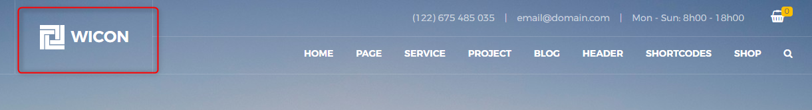
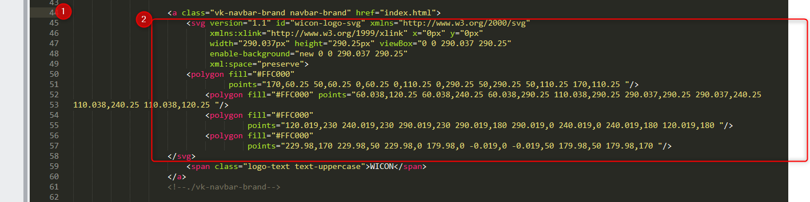
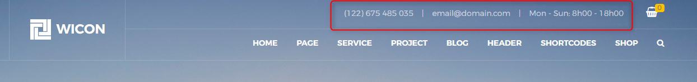
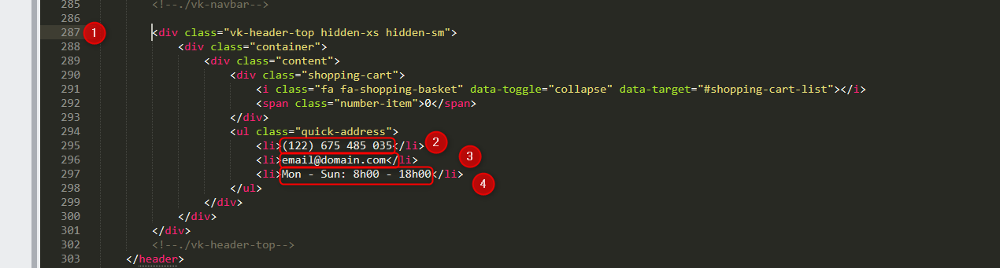
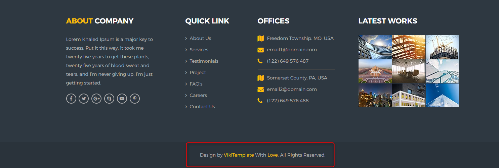
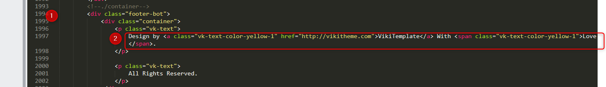
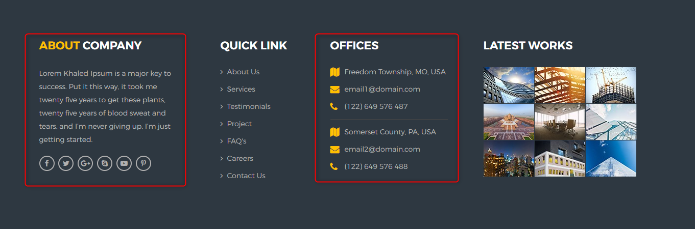
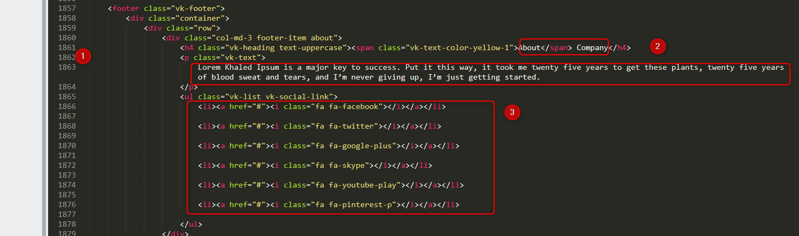
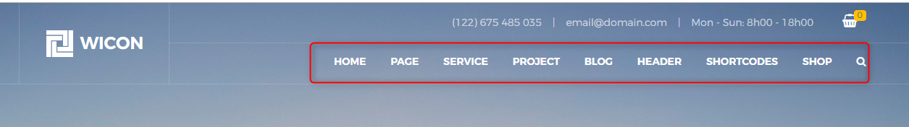
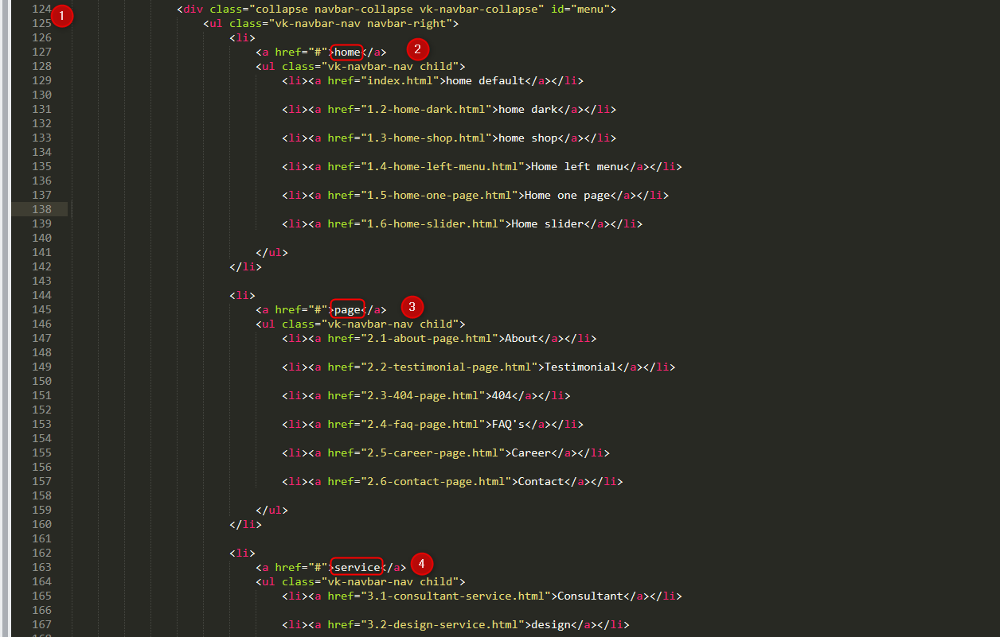
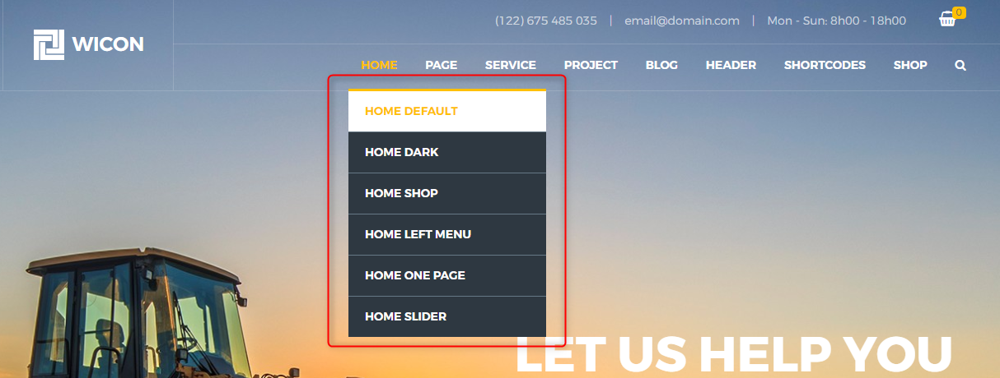
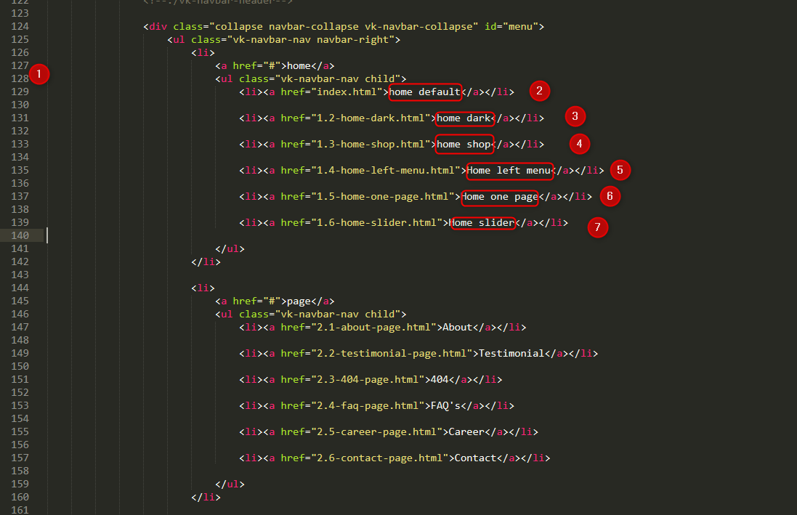
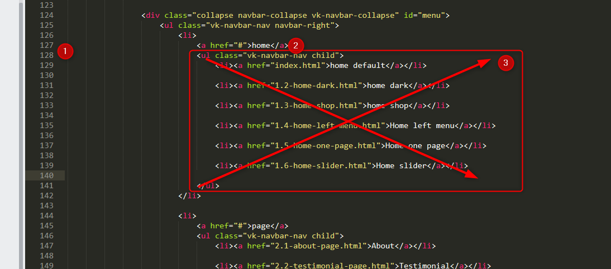
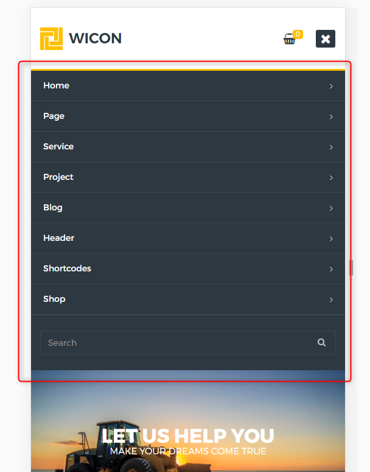
Edit Main Menu will apply to Mobile Menu
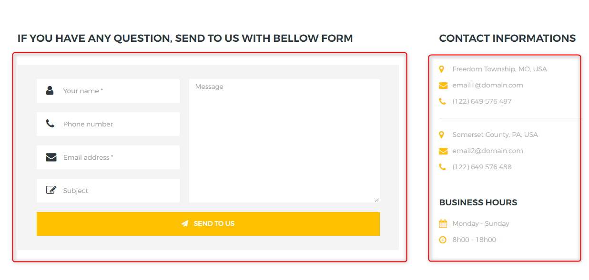
Configuration Email Address
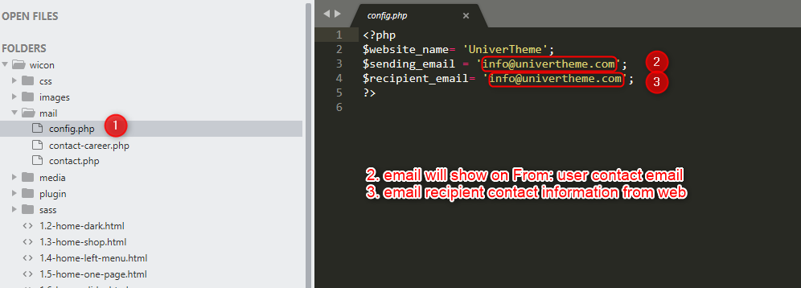
Edit Contact Form Information
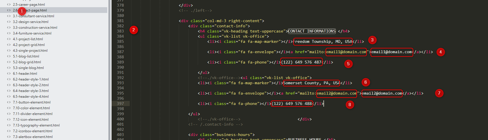
Email Message
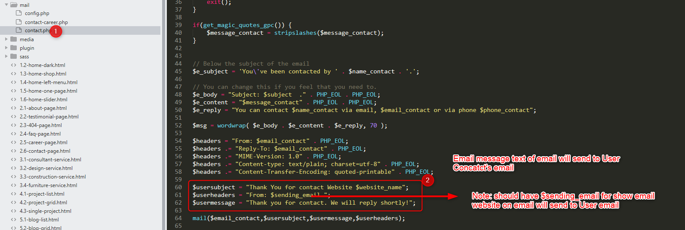
Thank you Message after Sent
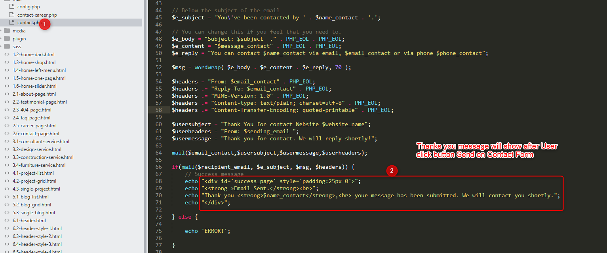
To overide the theme CSS styles in CSS level you should use
css/custom.css for your own customization. This will make the future updates easier if you keep your own CSS code seperate.
Below is the list of all plugins and external resources used to power .
| Name | Description | URL |
|---|---|---|
| jQuery 3.1.1 | Core Javascript library | http://www.jquery.com |
| jQuery Waypoints | With the release of Waypoints 3.0 the library no longer has a hard jQuery dependency, so the name has changed slightly. | https://github.com/imakewebthings/jquery-waypoints |
| jQuery Loader 2 | QueryLoader2 is a better version of the old script posted in 2009. It serves the main purpose of preloading the images on your website by showing an overlay and a loading bar. It automatically fetches all your images and background images and preloads them before showing the webpage. | https://blog.gaya.ninja/articles/queryloader2-preload-your-images-with-ease/ |
| jQuery Isotope | An isotope is a form of a chemical element whose atomic nucleus contains a specific number of neutron s, in addition to the number of proton s that uniquely defines the element. | https://github.com/metafizzy/isotope |
| Twitter Bootstrap v3.3.7 | Sleek, intuitive, and powerful front-end framework for faster and easier web development | http://getbootstrap.com |
| Slick Corousel Plugin | The last carousel you'll ever need. | http://kenwheeler.github.io/slick/ |
| FontAwesome | The iconic font designed for use with Twitter Bootstrap | http://fortawesome.github.com/Font-Awesome/ |
| Font Substitution | Themify Icons is a complete set of icons for use in web design and apps, consisting of 320+ pixel-perfect, hand-crafted icons that draw inspiration from Apple iOS 7 - available to the public, 100% FREE! You may use or distribute it for any purpose, whether personal or commercial. This icon set is a must have tool for web designers and developers. | https://themify.me/themify-icons |
| Transfonter | The @font-face CSS rule allows web developers to specify online fonts to display text on their web pages. By allowing authors to provide their own fonts, @font-face eliminates the need to depend on the limited number of fonts users have installed on their computers. | http://transfonter.org/ |